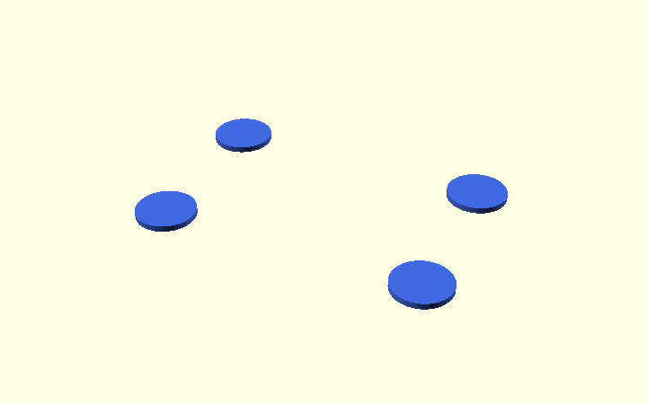
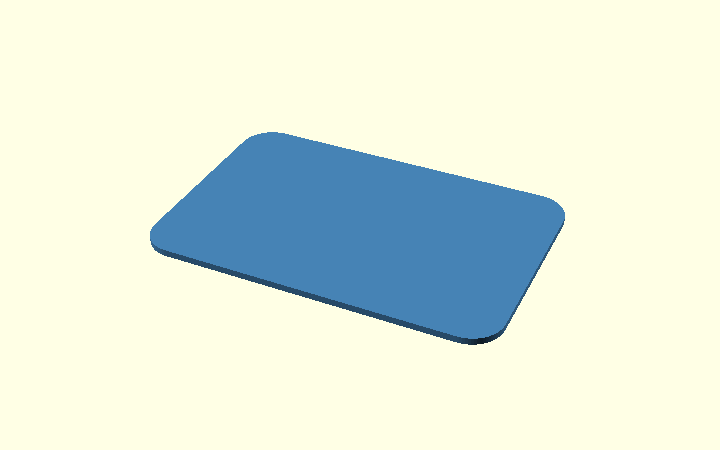
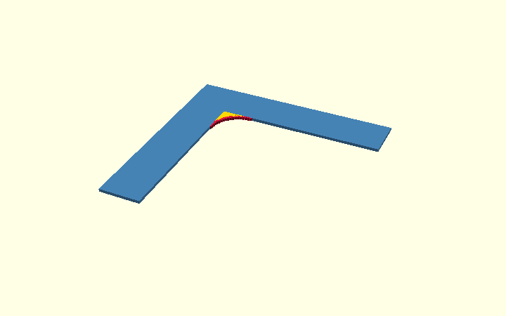
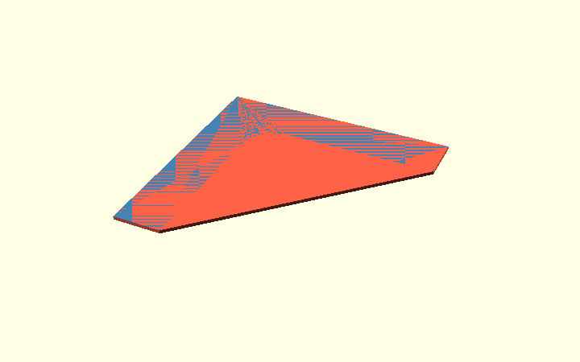

How OpenSCAD hull() works
This separate, illustrated tutorial explains the hull() operation without interrupting the corner bracket design walkthrough.
The key idea: hull() creates the smallest convex shape around its inputs. That can produce rounded outside corners if the inputs are circles, or sloped sides when connecting two rectangles of different sizes. It cannot preserve the concave inside corner of an L shape.
You can explore the examples in OpenSCAD using rounding_explained.scad and hull_explained.scad.
Rounded corners: circles versus a concave L
hull() can produce rounded corners, but only when the input shapes
already have rounded outside edges. To see the difference, compare
the circle example with the actual inside corner of the bracket.
Example A — rounded outside corners using circles
First place four separate circles at the corners of an imaginary rectangle. Each circle has a radius of 5 mm.

module four_circles() {
for (x = [-22, 22], y = [-13, 13])
translate([x, y]) circle(r = 5);
}
Next apply hull(). Picture a tight rubber band around all four
circles. It connects the outside of the circles with straight lines,
but keeps the curved parts at the corners. So hull() does not
calculate a corner radius: circle(r = 5) supplies that radius.

module hull_of_circles() {
hull() four_circles();
}
Example B — why a point-based inside arc was originally used
Now look at the L-shaped profile before rounding. Its inside corner
is the point (0, 0). Unlike the rectangle above, this is a
concave corner: material is missing between the two arms.
module sharp_L() {
polygon([
[0, 0], [armH, 0], [armH, wall],
[-wall, wall], [-wall, -armV], [0, -armV]
]);
}
One way to round only that corner is to calculate points along a
quarter-circle. This was used in the original v0.1 profile.
Start with a circle of radius r, centred at (r, -r).
The actual bracket still defaults to r_in = 2 mm, but the teaching
illustration uses r = 10 mm to make the construction easier to see.
The full circle in this legacy point-based example is a visual
construction guide. That earlier method used sine and cosine to
calculate each arc vertex, rather than subtracting a circle():
x = r + r * cos(a);
z = -r + r * sin(a);
For example, when r = 2 mm:
- at 180 degrees, the point is
(0, -2): the start of the arc; - at 135 degrees, it is about
(0.586, -0.586); - at 90 degrees, it is
(2, 0): the end of the arc.
The older for expression repeats the calculation every 5 degrees
from 180 to 90, producing 19 points. In this picture, red dots
mark those points. The yellow region shows the material added at
the inside corner. In the current model, the same shape is built
with ordinary 2D square() and circle() operations.

corner_arc = (r_in > 0)
? [for (a = [180 : -5 : 90])
[r_in + r_in * cos(a), -r_in + r_in * sin(a)]]
: [[0, 0]];
In the former implementation, polygon() joined the points into a
single 2D outline. This picture is retained to explain that
technique, not to show the current profile() implementation.
Finally, why not apply hull() to the whole L? Because hull
always makes a convex shape. It would bridge the space between
the arms and fill most of the L's open inside corner. The red
region below is the unwanted extra material.

// This is deliberately NOT used for the bracket:
hull() rounded_L();
In short: hull() is suitable for rounded outside corners made
from circles, but not for this concave L corner. The current bracket
uses 2D square() - circle() plus union(). The older approach
using calculated polygon points is kept in the editable
rounding_explained.scad tutorial
as a comparison.
Sloped edges: hull between two rectangular layers
First, a simpler example. The bracket is L-shaped, which makes the chamfer operation harder to see. Let's try the same idea on an ordinary rectangular bar. The following pictures are generated from the small, editable hull_explained.scad example.
A. Start with a plain bar
This rectangular block has straight, sharp edges. It is what we want
to change. In OpenSCAD, cube() makes a rectangular solid.

module original_bar() {
translate([0, 0, height / 2])
cube([length, width, height], center = true);
}
B. Make a thin, wide layer at the bottom
Imagine taking a very thin horizontal slice through the bottom of the
bar. It is as wide and as long as the original bar, but only 0.5 mm
thick. This is the first shape that we will give to hull().

module wide_layer() {
translate([0, 0, slice_thickness / 2])
cube([length, width, slice_thickness], center = true);
}
C. Put a smaller layer above it
Now add a second thin layer at the top of the bar (orange). It is smaller than the bottom layer (blue): on every side it is 5 mm in from the edge. The two layers do not touch yet. They are the two inputs for the next operation.

module narrow_layer() {
translate([0, 0, height - slice_thickness / 2])
cube([length - 2 * chamfer, width - 2 * chamfer,
slice_thickness], center = true);
}
D. Connect both layers using hull()
Now OpenSCAD wraps the two layers in the smallest solid that encloses
both of them. Think of stretching tight plastic film around both.
This is what hull() does. Since the bottom is wide and the top is
narrower, the new connecting sides become sloped.

module sloped_hull() {
hull() {
wide_layer();
narrow_layer();
}
}
E. Compare the before and after
Left: the original bar with sharp edges.
Right: the result after hull(), with sloping edges.
intersection() can keep only the volume shared by the original bar
and this new shape. In this simple example the hull is already
completely inside the bar, so intersection() changes nothing further.

module clipped_bar() {
intersection() {
original_bar();
sloped_hull();
}
}
Back to the corner bracket. The real model uses the same principle,
but the two layers have a different outline: outer_shape() instead
of rectangles. The code below uses offset(delta = -cs) to make
one outline smaller, hull() to connect the two sizes, and
intersection() to trim the actual L-shaped bracket. This avoids
having to cut every side edge individually. In contrast to the simple
bar, the bracket's construction keeps the plywood contact faces flat.
Is hull() the simplest way to round an L corner?
Not for a concave (inside) corner. Two ordinary shape-based methods are easier to understand:
- 2D first:
difference()of asquare()and acircle(),union()that small corner piece with the L, thenlinear_extrude(). - 3D first:
difference()of acube()and acylinder(), thenunion()it with the extruded L.
The complete example—including nine illustrated steps, both complete
OpenSCAD constructions, and a comparison with point-based polygon()—
is on the separate Polygon and rounded-corner guide.
Those alternatives show the same target shape without using hull().
Applying this to the actual bracket
The bracket's inside radius is now made in 2D from a small
square() with a matching circle() subtracted, joined to a sharp L
profile with union(), then extruded. The former 19-point
polygon() arc is documented above as a historical comparison.
Using 72 circle segments retains the same 5-degree approximation.
For the outer side-edge chamfers, the code creates a broad and a slightly inset version of a temporary outline. hull() connects these into a sloped limiting shape. intersection() keeps only the material shared by the real L profile and that temporary shape.
See Step 1 and Step 2 of the model design for the actual profile(), side_chamfer_env(), and body() code. The examples are for learning. Step 1 of the real design now uses the
2D boolean approach; the hull() demonstration still applies to its
outer side-edge chamfers.